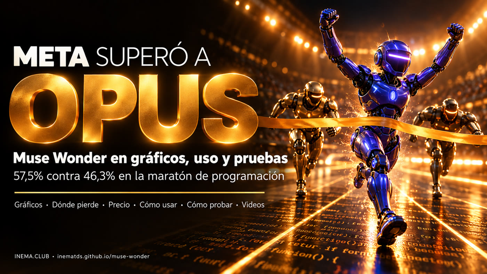

Muse Wonder y Wonder Full en gráficos comparativos: dónde ganan, dónde pierden, cómo usarlos y cómo probarlos en tu proyecto.

El 12 de octubre de 2026 Meta lanzó dos modelos de inteligencia artificial, Muse Wonder y Muse Wonder Full, hechos para trabajar solos durante mucho tiempo en programación y tareas de oficina. Esta guía reúne los números que verificamos en fuentes oficiales e independientes, muestra dónde ganan y dónde pierden frente a Claude Opus 5.5 y GPT-6 Astra, y enseña a usarlos y probarlos por tu cuenta. Sirve para quien programa con agentes y quiere decidir con pruebas propias, no con el gráfico de quien vende. Para leerla no necesitas instalar nada.
Ambos leen 1.048.576 tokens de contexto, reciben texto, imagen, video, audio y PDF, y responden solo en texto.
Está en la API de Meta (muse-wonder-1.0, en Preview), en Muse Code y en OpenRouter. Cuesta US$ 4 por millón de tokens de entrada y US$ 20 de salida, igual que Opus 5.5.
La versión más fuerte. No tiene API: solo corre en Muse Code, el agente de terminal de Meta, en los planes Power (US$ 50/mes) y Maximum (US$ 200/mes).
Trabajo largo y autónomo: programación en varios archivos, agentes, uso de la computadora, derecho y finanzas. El anterior Muse Spark era el rápido y compacto.
Barras a escala desde cero. En ámbar, el modelo de Meta. Cada gráfico trae su fuente; "Meta" significa la tabla oficial de la propia Meta (autoevaluación).
Fuente: Meta, dev.meta.ai/models/muse-wonder. El Full se midió en xhigh, y cada modelo corrió en su propio harness.
Fuente: Meta (números de terceros: Datacurve, OpenAI y Anthropic).
Fuente: Artificial Analysis, 12/10/2026 (evaluación independiente).
Fuente: Artificial Analysis. El Full empata con Claude Code + Sonnet; supera a Opus por 2 puntos.
Fuente: Meta. Índice creado por la propia Meta (7 tareas personales y de oficina): leer con cautela.
Fuente: Meta y Vals.ai. En el índice general de Vals el Full quedó 5.º, con 64,57%.
Según la propia tabla de Meta y Artificial Analysis, hay áreas en las que Opus y Astra van adelante.
Fuente: Meta.
Fuente: Meta. El Full subió de 33% (Spark 1.3) a 57%, pero aún queda atrás.
Fuente: Artificial Analysis (6.000 preguntas).
Fuente: Artificial Analysis. La tasa de Opus y Astra no aparece en el texto de AA (solo en un gráfico en imagen), por eso quedó fuera.
Wonder lee mucho: 7,69 millones de tokens de entrada por tarea, que son el 76% del costo. Por eso Astra, Argon y GPT-6.1 salen más baratos por tarea.
Fuente: Artificial Analysis. El Full no tiene precio por token, así que no entra.
| Modelo | Entrada | Salida |
|---|---|---|
| Muse Wonder | US$ 4 | US$ 20 |
| Claude Opus 5.5 | US$ 4 | US$ 20 |
| GPT-6 Astra / Fable 5.1 | US$ 10 | US$ 50 |
| Muse Spark 1.3 | US$ 1,25 | US$ 4,25 |
Caché de entrada de Wonder: US$ 0,20. Sin recargo por contexto largo. Full: solo con la suscripción de Muse Code (Power US$ 50, Maximum US$ 200 al mes).
Wonder funciona por API (pago por uso) y en Muse Code. El Full solo en Muse Code, con suscripción Power o Maximum. Pagar la suscripción no da acceso al Full por API.
Entra a dev.meta.ai, crea la cuenta de desarrollador y genera una clave. Guárdala en una variable de entorno, nunca en el código.
export MODEL_API_KEY="sua-chave" curl -s https://api.meta.ai/v1/models -H "Authorization: Bearer $MODEL_API_KEY" # verifica que aparezca muse-wonder-1.0
El endpoint Chat Completions es compatible con el formato de OpenAI: cambia el base_url y el nombre del modelo. Para tareas largas con herramientas, Meta recomienda la Responses API (POST /v1/responses).
import os from openai import OpenAI client = OpenAI(base_url="https://api.meta.ai/v1", api_key=os.environ["MODEL_API_KEY"]) r = client.chat.completions.create( model="muse-wonder-1.0", reasoning_effort="high", # va de "minimal" a "max"; "max" NO se convierte en el Full messages=[{"role": "user", "content": "Explica qué hace este repositorio."}], ) print(r.choices[0].message.content)
Wonder está en OpenRouter como meta/muse-wonder, con el mismo precio (US$ 4 / US$ 20) y 1M de contexto. El Full no está ahí.
client = OpenAI(base_url="https://openrouter.ai/api/v1", api_key=os.environ["OPENROUTER_API_KEY"]) client.chat.completions.create(model="meta/muse-wonder", messages=[...])
Es el camino hacia Wonder Full. Ejecútalo en la carpeta del proyecto, confía en la carpeta e inicia sesión por el navegador o con la clave. Los planes están en dev.meta.ai/docs/muse-code/subscriptions.
curl -fsSL https://dev.meta.ai/install.sh | sh # Linux y macOS irm https://dev.meta.ai/install.ps1 | iex # Windows (PowerShell) muse --version cd meu-projeto && muse # elige el modelo Wonder en la sesión muse exec "ejecuta las pruebas y corrige lo que falle" # sin pantalla (CI), con META_API_KEY
Un benchmark es el promedio de tareas ajenas. Para decidir, compara en tu base, en las mismas condiciones. Define antes qué vas a comparar: Wonder × Opus por API (mismo precio) o Muse Code + Full × Claude Code + Opus (suscripción × suscripción).
Un bug con una prueba que falla, una funcionalidad mediana, una refactorización en varios archivos y, si puedes, una tarea larga (horas). Sin pruebas no hay cómo decir quién acertó.
El mismo commit, una copia limpia para cada agente, la misma solicitud, y las pruebas de verificación fuera de su alcance.
git worktree add ../teste-wonder <commit> git worktree add ../teste-opus <commit> # el mismo archivo de solicitud en ambos; las mismas reglas (AGENTS.md / CLAUDE.md equivalentes)
El mismo nivel de razonamiento, el mismo límite de tiempo, las mismas herramientas y permisos. El resultado varía de una ronda a otra; tres rondas dan un promedio honesto.
Tiempo de reloj, costo (tokens de entrada, caché y salida × precio) y pruebas que pasan, incluida la suite completa para detectar regresiones. Anota también cuántas veces tuviste que intervenir.
| Tarea | Agente | Ronda | Tiempo | Costo | Pruebas | Regresión | Intervenciones |
|---|---|---|---|---|---|---|---|
| bug-login | Wonder | 1 | 12 min | US$ 0,80 | 14/14 | no | 0 |
| bug-login | Opus 5.5 | 1 | … | … | … | … | … |
Fila de ejemplo, solo para mostrar el formato de la planilla.
Pide a otra persona (o a un tercer modelo) que evalúe la calidad sin saber quién lo hizo. Compara tasa de acierto, costo por tarea resuelta y tiempo. Recuerda: Wonder es fuerte en tareas largas y débil en conocimiento puro.
Terminal-Bench (tareas en contenedores), SWE-bench Verified/Pro (local con Docker), ProgramBench (con mini-swe-agent) y OSWorld (uso de la computadora). Busca la página oficial de cada uno para las instrucciones. El Personal Superintelligence Index y el MemoryBench son internos de Meta y no se pueden ejecutar.
El explicativo 16:9 con todos los gráficos animados y el reel 9:16 en el modelo de 7 etapas.
Investigación hecha el 14/10/2026. Cuando dos fuentes divergen, el gráfico indica cuál se usó.